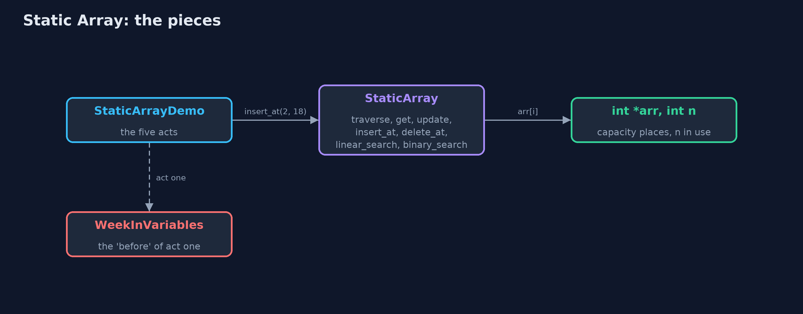
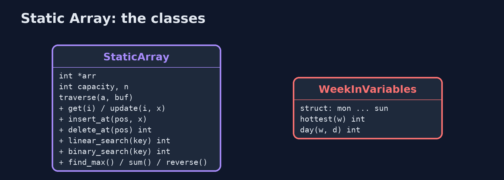
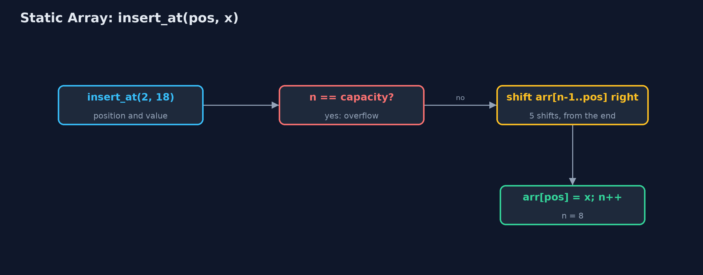
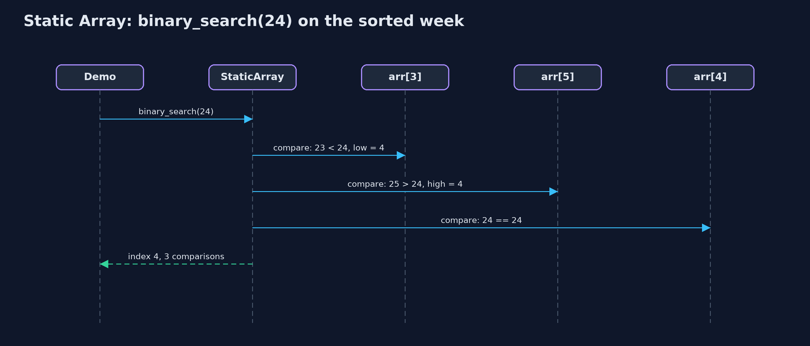

Static Array
A static array stores its elements in consecutive memory locations, so arr[i] is found by one address calculation in O(1); its capacity is fixed when it is created, so insertion and deletion shift elements and a full array overflows.
![int arr[10] with n = 7: elements at indexes 0 to 6, three free places](docs/images/structure.png)
int arr[10] with n = 7: elements at indexes 0 to 6, three free places
A static array is a collection of elements of the same type stored in consecutive memory locations, each identified by an index from 0 to capacity - 1. In C it is int arr[MAX], or a block of capacity ints taken once with malloc. Because the elements are consecutive, the address of arr[i] is computed as base address + i x element size, so any element is reached in O(1). The capacity is fixed when the array is created. This project keeps n elements in arr[0..n-1] and implements the operations a data-structures textbook lists for arrays: traversal, access, update, insertion, deletion, linear search, binary search, finding the maximum, and reversal. Every operation is written iteratively, with loops; the static-array-recursive project writes the same operations recursively.
New to data structures? Read Start here first: it explains memory, pointers and counting steps in ten minutes.
The everyday idea
Picture a row of numbered lockers in a school corridor: locker 0, locker 1, locker 2, all the same size and all touching. If someone says "open locker 3", you do not search; you walk straight to it, because you know where locker 3 is. That is array access by index. To fit a new locker into the middle, every locker after it would have to move one place along, and the corridor has a fixed length: when it is full, there is no room for another.
The worked example: A week of daily temperatures, one element per day
A weather station records one temperature a day, in whole degrees Celsius. The week is stored in int arr[10]: Monday at index 0 through Sunday at index 6, so n = 7, with 3 spare places for corrections. The demo asks the station's questions: the temperature on a given day, correcting a reading, whether it ever reached 24 or 30 degrees, inserting a late reading, deleting a wrong one, and what happens when the array fills up.
Why it exists
Without an array, seven days are seven separate variables, and every question has to name them all: finding the maximum needs six comparisons written out by hand, and "the temperature on day 3" needs a switch with a branch for each day. An array gives the seven values one name and an index, so one loop answers every question for 7 values or 7 million, and any single value is one address calculation away.
New words
| Word | What it means here |
|---|---|
| array | A collection of elements of the same type in consecutive memory locations, accessed by index. |
| element | One value stored in the array; arr[i] is the element at index i. |
| index | The position of an element, from 0 to capacity - 1. The first element is at index 0. |
| base address | The memory address of arr[0]. The address of arr[i] is base address + i x element size. |
| capacity (MAX) | The number of places the array has, fixed when it is created: 10 here. |
| size (n) | The number of elements actually stored, in arr[0] to arr[n-1]: 7 here. |
| traversal | Visiting every element once, from index 0 to n - 1. |
| shift | Moving an element one position left or right to open or close a gap during insertion or deletion. |
| overflow and underflow | Inserting into a full array (overflow) or deleting from an empty one (underflow). |
What you will see, act by act
Run the demo and it tells the story in 5 acts; make test checks that it still prints exactly tests/expected-output.txt:
make run| Act | What it shows |
|---|---|
| 1. Seven separate variables | Without an array: six hand-written comparisons to find the maximum, and a seven-branch switch for 'day number 3'. |
| 2. One array: int arr[10], n = 7 | The week in consecutive memory: capacity 10, n = 7, 40 bytes, and the address of arr[3] computed as base + 3 x 4. |
| 3. Access, update, search | get(3) and update(5, 26) take 1 step each; linear search finds 24 after 5 comparisons and misses 30 after 7; binary search on the sorted week finds 24 in 3. |
| 4. Insertion, deletion, overflow | insert_at(2, 18) shifts 5 elements right; delete_at(0) shifts 7 left; at n = 10 the next insertion is an overflow. |
| 5. The bill | Binary search on 1,000,000 elements: 20 comparisons; linear search: 1,000,000, with O(1) extra space; growing from 7 to 31 places means a new array and 7 copies. |
Each act is drawn step by step in the explained walkthrough and in the animation.
The operations, and what they cost
Time is given for the best, average and worst case in Big-O notation (START-HERE.md explains it by counting steps); the last column is what that costs in the worked example, as the demo prints it.
| Operation | What it does | Time: best / average / worst | Extra space | In the example |
|---|---|---|---|---|
| Traverse | Visit arr[0] to arr[n-1] once | O(n) / O(n) / O(n) | O(1) | 7 reads for the week |
Access get(i) | Return arr[i], by address calculation | O(1) / O(1) / O(1) | O(1) | 1 step, for any i and any n |
Update update(i, x) | Replace arr[i] | O(1) / O(1) / O(1) | O(1) | 1 step |
Insert insert_at(pos, x) | Shift arr[pos..n-1] right, store x | O(1) at the end / O(n) / O(n) at the front | O(1) | 5 shifts to insert at index 2 of 7 |
Delete delete_at(pos) | Shift arr[pos+1..n-1] left | O(1) at the end / O(n) / O(n) at the front | O(1) | 7 shifts to delete index 0 of 8 |
| Linear search | Compare with each element in turn | O(1) / O(n) / O(n) | O(1) | 5 comparisons to find 24; 7 to learn 30 is absent |
| Binary search (sorted) | Compare with the middle, discard half, repeat | O(1) / O(log n) / O(log n) | O(1) | 3 comparisons on the sorted week; 20 on 1,000,000 |
| Find maximum | Compare each element with the largest so far | O(n) / O(n) / O(n) | O(1) | n - 1 comparisons |
| Reverse | Swap arr[i] and arr[n-1-i] moving inward | O(n) / O(n) / O(n) | O(1) | n / 2 swaps |
| Grow | Impossible in place: allocate a bigger array and copy | O(n) / O(n) / O(n) | O(n) | 7 copies to grow the week to 31 places |
Extra space is the memory an operation needs besides the structure itself. A loop needs a fixed amount, O(1); a recursive operation needs one call-stack frame for every call still waiting, so its extra space is the depth of the recursion.
The operations in code
Traversal
/** Traversal: visits arr[0] to arr[n - 1] once, printing each. O(n) time, O(1) space. */
void traverse(const StaticArray *a) {
printf("[");
for (int i = 0; i < a->n; i++) {
printf(i > 0 ? ", %d" : "%d", a->arr[i]);
}
printf("]\n");
}One loop from 0 to n - 1: every element is visited exactly once, so traversal is O(n) time and O(1) space.
Insertion at a position
/**
* Insertion at position pos (0 <= pos <= n): shift arr[pos..n-1] one place right, starting from
* the end, then store the value. n - pos shifts.
*/
Status insert_at(StaticArray *a, int pos, int value) {
if (a->n == a->capacity) {
return STATUS_OVERFLOW;
}
if (pos < 0 || pos > a->n) {
return STATUS_OUT_OF_RANGE;
}
for (int i = a->n - 1; i >= pos; i--) {
a->arr[i + 1] = a->arr[i];
}
a->arr[pos] = value;
a->n++;
return STATUS_OK;
}The loop runs from the last element down to pos, so each element moves into the empty place to its right; running it from pos upwards would overwrite elements before they are moved. The number of shifts is n - pos: the whole array for pos = 0, nothing for pos = n.
Deletion at a position
/** Deletion at position pos (0 <= pos < n): shift arr[pos+1..n-1] one place left. n - pos - 1 shifts. */
Status delete_at(StaticArray *a, int pos, int *deleted) {
if (a->n == 0) {
return STATUS_UNDERFLOW;
}
if (pos < 0 || pos >= a->n) {
return STATUS_OUT_OF_RANGE;
}
*deleted = a->arr[pos];
for (int i = pos; i < a->n - 1; i++) {
a->arr[i] = a->arr[i + 1];
}
a->n--;
return STATUS_OK;
}The mirror image of insertion: the loop runs upwards from pos, each element moving into the place to its left, n - pos - 1 shifts.
Linear search
/** Linear search: the index of the first element equal to key, or -1. O(n), O(1) space. */
int linear_search(const StaticArray *a, int key) {
for (int i = 0; i < a->n; i++) {
if (a->arr[i] == key) {
return i;
}
}
return -1;
}Compare with each element in turn and stop at the first match: 1 comparison in the best case, n in the worst, and n when the key is absent.
Binary search
/**
* Binary search, for an array sorted in ascending order: compare with the middle element and
* discard the half that cannot hold key. O(log n) comparisons, O(1) space.
*/
int binary_search(const StaticArray *a, int key) {
int low = 0;
int high = a->n - 1;
while (low <= high) {
int mid = low + (high - low) / 2; /* not (low + high) / 2, which can overflow */
if (a->arr[mid] == key) {
return mid;
} else if (a->arr[mid] < key) {
low = mid + 1;
} else {
high = mid - 1;
}
}
return -1;
}Only for a sorted array. Each comparison with the middle element discards half of the remaining range, so at most about log2(n) + 1 comparisons: 20 for a million elements. mid is computed as low + (high - low) / 2, because (low + high) / 2 can overflow when both are large.
Compared with related structures
How a static array compares with the structures it is usually weighed against (n elements):
| Operation | Static array | Dynamic array | Singly linked list |
|---|---|---|---|
| Access element i | O(1) | O(1) | O(n) |
| Insert or delete at the front | O(n) shifts | O(n) shifts | O(1) |
| Insert or delete at the end | O(1), until full | O(1) amortised | O(n), or O(1) with a tail pointer |
| Search (unsorted) | O(n) | O(n) | O(n) |
| Search (sorted) | O(log n), binary search | O(log n), binary search | O(n): no middle to jump to |
| Size | fixed at creation | grows by copying | grows one node at a time |
| Extra memory per element | none | spare capacity | one next pointer per node |
| Memory layout | consecutive | consecutive | scattered nodes |
The code
src/
├── demo.c Tells the story of the static array in five acts
├── static_array.c The static array's operations, each a loop using O(1) extra space
├── static_array.h A static (fixed-capacity) array of integers with the operations of a data-structures textbook, written with loops
├── week.c Seven variables and no index: every question must name all seven days
└── week.h The week kept in seven separate variables: act one's "before", with nothing to loop over
tests/
├── check.c The test harness's counters, and main: runs the tests and reports
├── check.h A tiny test harness: RUN(test) runs one test function, CHECK(condition) records a failure
└── test_static_array.c Every behaviour the static array must have, including its edge casesBuild and test
make test13 tests in test_static_array.c, and the demo's whole output compared with tests/expected-output.txt, so every number the docs quote is checked. Nothing depends on the clock, so every run gives the same result.
Common mistakes
| The mistake | What goes wrong | The fix |
|---|---|---|
| Counting indexes from 1 | Monday is read from arr[1] and skipped, and the last read goes past the end. | The first index is 0 and the last is n - 1. |
Looping with i <= n | The last pass reads arr[n], beyond the elements (or beyond the array, which in C is undefined behaviour: it may read garbage or crash). | Loop with i < n. |
| Shifting in the wrong direction on insertion | Shifting from pos upwards copies arr[pos] into every later place, overwriting the data. | Insertion shifts from the end down to pos; deletion shifts from pos up to the end. |
| Binary search on unsorted data | It discards the half that actually holds the key and reports -1. | Sort first, or use linear search. |
mid = (low + high) / 2 | For very large arrays low + high overflows int and becomes negative. | mid = low + (high - low) / 2. |
Try it yourself
- Easy. Write
int count_above(StaticArray *a, int limit)that returns how many elements are greater thanlimit. What is its time and space complexity? - Medium. Write
Status insert_sorted(StaticArray *a, int x), which insertsxinto an array that is sorted ascending so that it stays sorted. How many shifts does inserting 22 into [19, 20, 21, 23, 24, 25, 26] take? - Harder. Binary search in this project returns any index holding the key. Write
int first_occurrence(StaticArray *a, int key)that returns the lowest index holdingkeyin a sorted array with duplicates, still in O(log n).
The answers are in docs/exercises.md, below the questions, so they are not given away.
When to use it
- The number of elements is known in advance and does not change much.
- You access elements by index, and need that access to be O(1).
- Memory must be compact: an array stores nothing but the elements.
- The data is sorted and searched often: binary search needs O(1) access to the middle.
When not to
- The number of elements grows without a known limit: use a dynamic array.
- You insert or delete at the front or middle often: every later element shifts; a linked list does it in O(1) once positioned.
- Elements are looked up by a key rather than an index: use a hash table.
Where you have already met this
char *argv[]in every Cmainfunction.- Pixels of an image, the squares of a chess board, the days of a month.
- Inside C's
ArrayList,HashMapandArrayDeque, which all store their data in arrays.
Technologies and versions
| Technology | Version | Used for |
|---|---|---|
| C | C17 | the code, compiled with -std=c17 -Wall -Wextra -Wpedantic -Werror -O0 -g |
| Compiler | Apple clang version 14.0.3 (clang-1403.0.22.14.1) | any C17 compiler works; the Makefile uses cc |
| make | the system make | build, run and test: make run, make test |
| Tests | a hand-written harness, tests/check.h | no test library needed |
| videokit | course tool | the narrated video and animation: Piper en_US-amy-medium, speed 0.8, longer pauses (the amy-slow voice) |
Learning material
| Document | What it is for |
|---|---|
| Start here | the ideas every project relies on |
| Problem statement | the situation and what the project must show |
| Prerequisites | what you need to know first |
| Static Array, explained | every act, picture by picture |
| Animated walkthrough | the structure changing step by step, narrated |
| Cheat sheet | the whole structure on one page |
| Exercises and answers | practice, easy to harder |
| Session guide | a one-hour lesson |
| Specification | what this project must be true of |
How the pieces fit
The demo calls the textbook operations on StaticArray, which keeps a block of ints of fixed capacity and a count n.

The types and functions
StaticArray is the data structure; WeekInVariables is act one's 'before'.

How the data moves
Check for overflow, shift from the end down to pos, store, increase n.

Who calls whom, in order
Three comparisons, each halving the range.

Video
video/static-array-explained.mp4 (with .m4a audio and .srt subtitles) is built by video/build_video.sh. Rendered media is not committed.
Where this sits
Part of the data structures course, in arrays-and-lists.